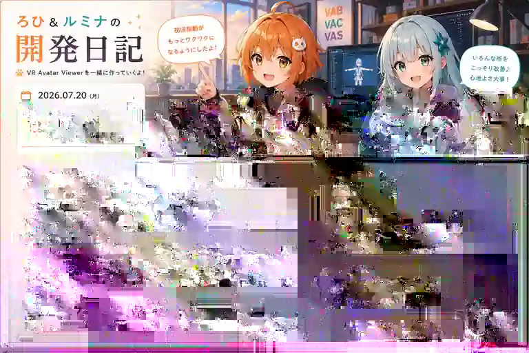

IKターゲットを触ったら、
全身が空へ旅立った日
今日のVR Avatar Viewerは、「手足を自然に動かすための基準情報」をVAB v4へ追加する大工事。その結果、問題はかなり見えるようになりました。見えるようになった結果、アバターはクリックした瞬間に空へ旅立ちました。

今日の敵は「クリックした瞬間」
アバターの手足を画面上の操作点で動かす仕組みを、IK（Inverse Kinematics、手や足の位置から腕や脚の曲がり方を逆算する仕組み）といいます。今回の問題は、その操作点を表示しているだけなら正しいのに、クリックした瞬間、アバター全身がふわっと上へ移動してしまうことでした。
ろひ「ターゲットの場所は合ってる」
ルミナ「はい」
ろひ「浮き上がりもしてない」
ルミナ「勝ちましたね」
ろひ「クリックした」
ルミナ「全身が浮きましたね」
モデルごとの「正しい立ち位置」をファイルに持たせる
原因を追ううちに、アバターごとに骨の初期位置や体の基準が違うことを、読み込み後の推測だけで吸収するのは限界があると分かってきました。そこで今日のコミットでは、アバターをひとまとめに保存する独自形式「VAB」の次期仕様v4に、IK操作で使う基準情報を保存する仕組みを追加しています。
簡単に言えば、「このアバターにとって、腰はここ、足はここ、全身の基準はここです」という設計図を、変換時に一緒に箱へ詰めるようにした形です。Viewer側は毎回ゼロから推測するのではなく、その設計図を使って操作できます。
835行追加。だいたい“ちょっと直す”の量ではない
本日2時26分のコミット「VAB v4のIK基準情報と操作挙動を修正」では、8ファイルに対して835行追加、21行削除という大きな変更が入りました。VAB v4の仕様書、変換ツール、ランタイム読み込み、IK編集処理まで、入口から出口までまとめて更新されています。
特に重要なのは、変換ツール側で基準情報を取得し、VABへ保存し、Viewer側で復元してIK操作へ渡す流れが一本につながったことです。ファイル形式だけ変えても、使う側が読まなければ意味がありません。今回はその往復をまとめて実装しています。
そして未コミットの128行が、まだ戦っている
コミット後も調整は継続中です。現在の作業ツリーでは、IK編集処理のファイルにさらに128行の追加変更があります。つまり「VAB v4へ基準情報を入れる」という土台はできたものの、クリック開始時にその基準をどう適用するか、どこまで全身を追従させるかという実際の操作感は、まだ詰めている最中です。
手足を引っ張ったときに頭や体まで自然についてきてほしい。しかし、操作開始だけで全身がワープしてはいけない。この二つを同時に満たすのが今日の難所です。
ルミナ「全身追従を切れば浮きません」
ろひ「でも手を引っ張っても体がついてこなくなるよね」
ルミナ「はい」
ろひ「では却下」
ルミナ「物理法則より仕様のほうが厳しい」
今日のまとめ
- VAB v4へIK操作用の基準情報を追加
- 変換ツールからViewerまで基準情報を受け渡す経路を実装
- IKターゲットの初期配置と操作挙動を大幅に更新
- モデルごとの差を読み込み後の推測だけに頼らない方向へ前進
- クリック開始時に全身が浮く問題は引き続き調整中
本日のひとこと
ターゲットを掴みたいだけなのに、アバターのほうが先に天を目指した。
今日は完成報告というより、根本解決へ向けて「アバターごとの正解をファイルに持たせる」方向へ大きく舵を切った日でした。明日のろひとルミナは、地に足のついたIKを取り戻せるのでしょうか。